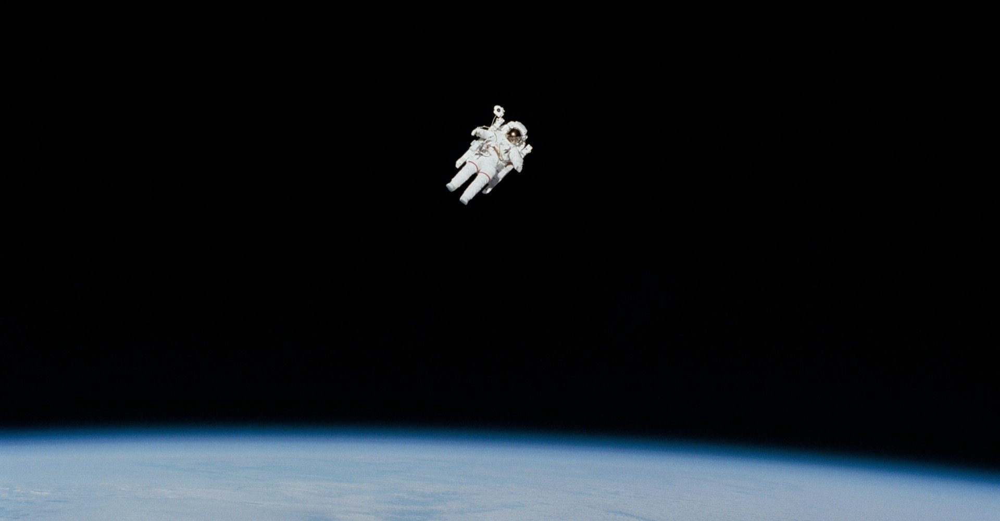

目の前に広がる暗闇。その果てに何があって、それは果たしてどこに繋がっているのか、誰にも見当がついていない未知の空間に、僕たちの惑星は浮かんでいる。
それは、数万年以上住み着いていた人類が密かに住処を変えようと考えていることなどつゆ知らず、何億年も前から広大な宇宙の片隅で明かりを灯し続ける。そして、あの人類初の有人宇宙飛行を成功させたユーリイ・ガガーリンはこんなことを言った。
そう、《地球は青かった》。
「こちらマーズナインティナイン、順調に飛行中」
従来のものよりだいぶコンパクトになった最新式の通信端末に向かって話すのは、白髪まじりのアメリカ人機長だ。宇宙飛行士界のレジェンドとも呼ばれる彼は、人類の火星移住構想に向けて本腰を入れた本部に対し往年の貫禄と持ち味の懐の深さでアピールし、見事機長の立場を射止めたのだった。
そんな芸当は、この先順調に飛行士人生がいったとしても僕には到底真似できない。「私が行かなくて誰が行く」なんて、そんなことは彼にしか言えない。僕の場合、「願わくば火星に行ってみたいです」がせいぜい関の山だろう。
アポロ11号が人類史上初めて月面に到着したのは、僕が生まれる30年近く前のこと。小学校に上がったばかりの頃、父と一緒に観た「世界の歴史」という今では古臭さすら感じるテレビ番組で、アポロ11号に乗って月に行ったアームストロングが月面をうさぎのごとくぴょこぴょこと飛び回ってはしゃいでいた。
それは、大人の格好をした子どものようにも見えた。でも、僕からしてみれば、いつもしかめっ面で叱る学校の先生なんかよりもよっぽど楽しそうだった。
「これは一人の人間にとっては小さな一歩だが、人類にとっては偉大な飛躍である」
さっきまであんなにはしゃいでいたのに、切り替わった画面で地球に帰還した彼が真面目そうに話す言葉は、周りで偉そうにしている大人よりも立派なことを言うもんだから、僕にとっての神様はその日からアームストロングになった。
「将来の夢は月面をうさぎみたいに飛び回ることです」
そんなことを国語の授業で発表して後ろを振り返ると、授業参観に来ていた父の顔はみるみるうちに赤くなっていった。友だちのお母さんたちは口元を隠しながら笑いを堪えている。僕は果たしてそんなに変なことを言ったのだろうか。その時初めて夢を語ることの難しさと、語ったからには何としても叶えたいという思いが芽生えた。
「お前、宇宙飛行士になりたいのかよ」
「本当にそうなのか」と父は疑問視していたが、校内では概ね評判だったらしい僕の夢はすぐに学校中に広まってしまい、それが気に喰わなかったらしい当時のガキ大将に僕は目をつけられてしまった。背後から棘のある言葉を投げられ、おまけに小石もランドセルに投げつけられながら、河原沿いを歩いていた。季節は肌寒さが頭を出し始めた初秋のことだった。
「そんなやつ、ほっとけ。見てみろ、空を。海なんかよりももっともっと広くて、どこまで続いているのか分からない。お前は将来、大人になったらあくせく働いているだろうそいつよりも大きな世界に行くんだよ」
石で凹みができてしまったランドセルを置き、部屋の机で突っ伏せていると、父は買ってきてくれたらしい子供用の宇宙図鑑を携えてそう声をかけてきた。
漫画家の父は『オリオンを巡る冒険』という漫画で連載を持っていた。今は亡き親友と主人公がよく2人で語り合った宇宙への憧れ。そんな彼の宇宙飛行士になる過程を描く青年漫画だ。
当時の僕にはあまり感情移入できなかったけど、僕が中学2年になり宇宙飛行士への夢を本格的に意識していた頃、主人公の親友として漫画に登場していた優くんという人物を父が熱心に話してくれるおかげで、その面白さが2倍にも3倍にもなって感じるようになった。
「優はな、宇宙への憧れが強すぎて何でも惑星に例えてしまうんだ。例えば、気難しいやつに出くわすと『あいつはCoRoT-7bみたいだな』という具合に。
ところがそんな話をしても誰も分かるものじゃない。だんだん人が離れていく様を自ら『俺はブラックホールみたいに何もかも飲み込んでしまうから』と締めくくっていたよ」
「宇宙飛行士になるための訓練を、優は怠けることなく黙々とやるんだ。授業中も大きな石のおもりをつけていて、先生に廊下に立っていろと言われれば喜んでバケツに水を汲んで立つような始末。彼の頭には宇宙に行くことしかなかったのだろうね」
そうやって父は宇宙の魅力を、優くんを介して伝えたかったのかもしれない。父の話す宇宙用語を知りたくて、学校の図書館で関連書籍を借りては読みふけった。ついには図書館だけでは利かず、地域の図書館や専門の本屋で立ち読みしたりして宇宙を少しずつ知っていった。やがて宇宙工学を学べる大学に入った。
それからというもの、実際にこの身で宇宙に行ってみたい思いが強くなり、宇宙飛行士になるための努力を惜しまなかったこの10年を、目の前で輝く地球の上で過ごしたのだった。
そんな僕が直面した、月や火星への人類移住計画。
歯止めのかからない大気汚染、相次ぐ大地震や火山噴火。それらに耐えかねた人類が、数十年先を見据えて地球から火星に移住する。それは人類の歴史が生き永らえる手段として大きな可能性を秘めていた。
しかし、その人類の未来の灯を危険な目に遭わせてきたのもまた人類だ。石油の枯渇がもう目前まで迫っている中、本格的に太陽光や自然エネルギー供給を視野に入れ始めたが、大国の政治家たちは自国の利権にばかりくらみ、本当に地球のことを考えている者など誰一人いなかった。
「仮に火星への移住に成功しても、長い年月をかけて人類はまた星を食いつぶしていく」
機長はふわふわと宙を舞いながら、小さな声で呟いた。
ちょうど考えていたことにリンクする発言に、この人は透視能力すらあるのかと耳を疑ってしまう。僕は慌てふためきながらも「そうなのですか？」ととぼけて見せる。
「さそり座が空に見え出すとオリオン座は逃げるように沈んでいくんだが、なぜだか知っているかい？」
何の脈絡もなさそうな星座の話が飛び出すものだから、僕は機長の意図が読めず首を傾げた。しかし、その理由は知っていた。まさしく、『オリオンを巡る冒険』を連載していた父から教えてもらったのだ。
「オリオンは狩りがうまくて調子に乗っていたんだ。そんな彼を嫌う女神がさそりを送り込んだ。さすがのオリオンもグサッと一刺しされたのさ」
若かりし父は恐ろしい表情でさそりの真似事をする。どんな強者も不意打ちには敵わないのだと、子どもながらに思った。
「だから、オリオン座はさそり座が出ると逃げてしまう」
父と同じ話をした機長はいたずらな笑みを浮かべた。しかし、その話が人類が惑星を食いつぶすことと何の関係があるのだろうか。
「たとえ火星移住を成功させても、我々はオリオンのように過信してはならない。火星にまで毒を盛られたくはないだろう？」
そのたとえ話は無理やりな気もしたが、頷いてみせる。そして、彼は『オリオンを巡る冒険』を知っているかと、父の漫画について語り始めた。さっきまでのオリオン座の話はその導入だったのだと彼は照れている。
「主人公は言うのさ。私の夢は火星でうさぎになることだよ、と。だから、楽しみなんだよ。きっと月以上に跳ねることができるんじゃないかと思って」
父がかつて教室で発表した僕の夢を漫画に描いてくれた日を思い出す。あの漫画が青年誌に載った時の友人たちの顔は未だによく覚えている。父が他界して数年後、漫画は各国で翻訳され、こうして海を越えて機長の元にも届いていた。
「なかでも、私は優という人物が大好きでね」
僕の親友の名前。実在しないけど、ずっと僕の親友だ。
「彼はこう言ったんだ。『奇蹟は待つものじゃなくて作るものなんだ』。その言葉通り、今度は我々が火星を奇蹟の惑星にしてみせようじゃないか」
そう言って彼は微笑む。まるで機長が優くん本人のように思えた。気分はかつてのアームストロングみたいにぴょこぴょこと飛び跳ねてみせている。
父さんにこの姿を見せることはできなかったけど。でも、父さんが創り出した優くんは、まさに僕たちと共にここにいる。
やがて機内が大きく揺れ始めた。火星の大気圏に突入したことを知らせるアラームが鳴り響く。
「マーズナインティナイン、間もなく着陸します」
すっかり機長の顔で、その手に握りしめられている小型端末へと向かう彼の瞳は少年のような輝きを放つ。そして、僕たちを乗せる小さな宇宙船はまだ誰も踏み込んだことのない惑星へと軽やかに着地した。